3 Mélanges et corps purs
- Identifier les corps simples et composés.
- Identifier les mélanges homogènes et hétérogènes.
- Savoir choisir la méthode de séparation adaptée à un mélange.
La première question que se pose un chimiste à propos d’un échantillon de matière inconnu est de savoir s’il s’agit d’une substance pure ou d’un mélange. Chaque échantillon de matière est l’un ou l’autre.
Lorsque nous parlons d’une substance pure, nous parlons de quelque chose qui ne contient qu’un seul type de matière. Il peut s’agir d’un seul élément ou d’un seul composé, mais chaque échantillon de cette substance que vous examinez doit contenir exactement la “même chose” et avoir les mêmes propriétés. Si nous prenons deux ou plusieurs substances pures et que nous les mélangeons, nous parlerons naturellement d’un mélange.
Selon la nature des particules qui la compose, la matière peut être classée en trois types : les corps purs simples, les corps purs composés et les mélanges.
3.1 Corps pur simple
Corps pur simple
Un corps pur simple est constitué d’atomes d’un seul élément.
Un corps pur simple est le type le plus simple de composition de la matière. Il s’agit d’un assemblage d’atomes d’un seul élément avec des propriétés physiques et chimiques uniques.
Chaque élément a un nom comme le silicium, l’oxygène ou le cuivre. Un morceau de silicium ne contient que des atomes de silicium et un morceau de cuivre ne contient que des atomes de cuivre. Les propriétés macroscopiques d’un morceau de silicium, comme la couleur ou la densité, sont différentes de celles d’un morceau de cuivre, car les propriétés submicroscopiques des atomes de silicium sont différentes de celles des atomes de cuivre.
3.2 Corps pur composé
Corps pur composé
Un corps pur composé est constitué de deux ou plusieurs éléments différents qui sont liés ensemble chimiquement.
Les particules qui forment un corps pur composé sont des atomes qui sont liés ensemble suite à une réaction chimique. Ces atomes ne sont pas simplement mélangés ensemble.
Par exemple, l’eau (H2O) est un corps pur composé constitué de deux éléments, l’hydrogène et l’oxygène. Ces éléments sont combinés d’une manière très spécifique, deux atomes d’hydrogène pour un atome d’oxygène (d’où H2O). Plusieurs composés contiennent de l’hydrogène et de l’oxygène, mais un seul a ce rapport spécifique de 2 pour 1, c’est l’eau.
Un corps pur composé a des propriétés physiques et chimiques différentes de celles des éléments qui le composent.
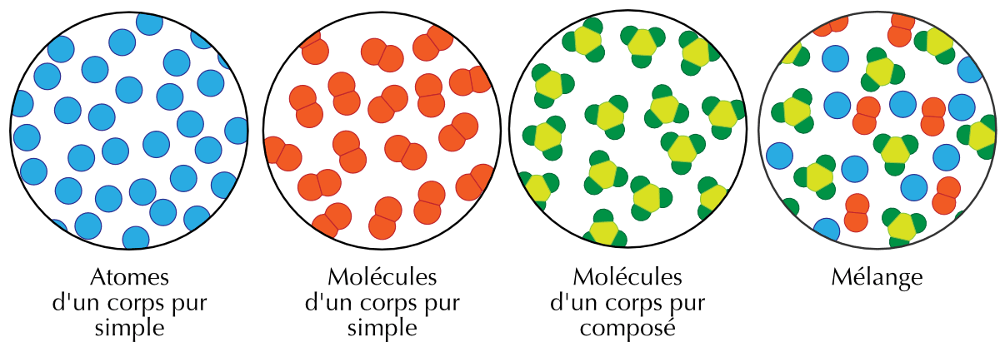
Pour chacune des substances suivantes, indiquez s’il s’agit d’un corps pur simple ou d’un corps pur composé.
- le dioxygène O2
- l’eau H2O
- le fer Fe
- le dioxyde de carbone CO2
- l’ozone O3
- le chlorure de sodium NaCl
- le diazote N2
- l’ammoniac NH3
- le soufre S8
- corps pur simple (un seul élément : O)
- corps pur composé (H et O)
- corps pur simple (un seul élément : Fe)
- corps pur composé (C et O)
- corps pur simple (un seul élément : O)
- corps pur composé (Na et Cl)
- corps pur simple (un seul élément : N)
- corps pur composé (N et H)
- corps pur simple (un seul élément : S)
Un corps pur simple ne contient qu’un seul type d’élément, même lorsque ses atomes sont regroupés en molécules (O2, O3, N2, S8).
3.3 Les mélanges
Mélange
Ensemble résultant de l’union de substances différentes sans transformation chimique
Un mélange est constitué de deux ou plusieurs substances (corps pur simples ou composés) qui sont physiquement mêlées, mais non liées chimiquement.
Les mélanges peuvent être homogène ou hétérogène. Ces deux termes sont introduits pour qualifier ce qui peut être différencié à l’oeil.
3.3.1 Les mélanges hétérogènes
Mélange hétérogène
Un mélange est hétérogène si on peut distinguer ses différents constituants à l’oeil nu.
La composition des mélanges hétérogènes varie d’un endroit à l’autre de la matière. Par exemple, si l’on met du sucre dans un bocal, que l’on ajoute du sable et que l’on agite le bocal, le mélange n’aura pas la même composition quelque soit l’endroit du bocal.
3.3.2 Les mélanges homogènes
Mélange homogène
Un mélange est homogène si on ne peut pas distinguer ses différents constituants à l’oeil nu.
Les mélanges homogènes ont une composition uniforme. Chaque partie d’un mélange a la même composition que n’importe quelle autre partie du même mélange. Si l’on dissout du sucre dans l’eau en mélangeant bien, le mélange sera le même, quelque soit l’endroit que l’on goûtera.
- L’air est un mélange homogène composé de plusieurs gaz, principalement l’azote et l’oxygène.
- L’eau de mer est un mélange homogène composé principalement d’eau et de chlorure de sodium (sel).
- L’essence est un mélange homogène composé d’une dizaine de substances.
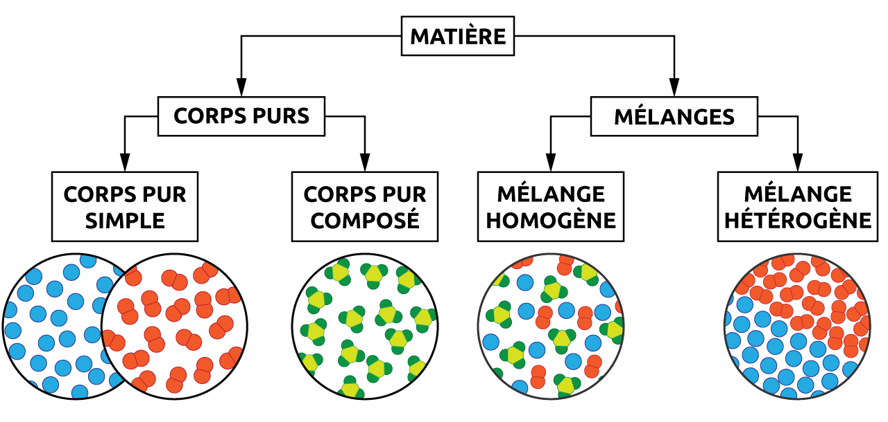
Indiquez si les échantillons suivants sont des mélanges homogènes ou hétérogènes.
- Un morceau de marbre
- Un velouté de légumes
- Du ciment
- Un cheeseburger
- Une infusion de thé
- mélange hétérogène
- mélange homogène
- mélange homogène
- mélange hétérogène
- mélange homogène
Indiquez si les échantillons suivants sont des corps purs, des mélanges homogènes ou des mélanges hétérogènes.
- L’eau distillée
- L’essence
- Le sable
- Le vin
- L’air
- H2O - corps pur
- hydrocarbures - mélange homogène
- débris de roches - mélange hétérogène
- eau + alcool - mélange homogène
- azote + oxygène - mélange homogène
3.3.3 Les dispersions
Les dispersions sont des mélanges homogènes dans lequel les particules en suspension sont si petites que le mélange semble parfaitement homogène à l’oeil nu. Cependant, à l’aide d’instruments d’observation, on pourra distinguer les différentes substances qui constituent les dispersions.
Les mélanges homogènes pourront à leur tour être classés en solutions, en colloïdes ou en suspensions, en fonction de la taille de leurs particules. Chaque particule peut être une macromolécule unique ou un agrégat de nombreux atomes, ions ou molécules.
- Les solutions (0.1 à 2 nm) La dissolution d’une substance dans une autre forme une solution. Un mélange homogène dans lequel les particules sont individuellement réparties de manière uniforme dans la substance dispersante.
- Les colloïdes (2 à 500 nm) La substance dispersée est répartie dans la substance dispersante. Les particules sont plus grandes que des molécules simples mais trop petites pour se déposer.
- Les suspensions (500 à 1000 nm) Les particules sont d’abord en suspension mais se déposent progressivement par décantation.
Une phase représente chaque partie homogène dont est constitué une dispersion. Dans une dispersion une phase peut être dispersante et l’autre dispersée. Les dispersions sont communément classées selon l’état physique des substances dispersée et dispersante.
| phase dispersée | phase dispersante | suspensions et colloïdes |
|---|---|---|
| gaz | gaz | mélange toujours homogène (solution) |
| liquide | gaz | brouillard, laque pour cheveux |
| solide | gaz | fumée, nuage, poussière |
| gaz | liquide | crème fouettée, soda, mousse à raser |
| liquide | liquide | lait, mayonnaise, crème solaire |
| solide | liquide | peinture, sang, boue |
| gaz | solide | polystyrène, pierre ponce |
| liquide | solide | agar-agar, gelatine |
| solide | solide | roches naturelles, plâtre, ciment, béton |
3.4 Méthodes de séparation
Les constituants d’un mélange ont des propriétés physiques différentes. On peut exploiter ces différences pour séparer les différents constituants.
Les techniques décrites ne dépendent que des propriétés physiques des constituants. Il n’y a pas de transformation chimiques qui se produit.
3.4.1 L’attraction magnétique
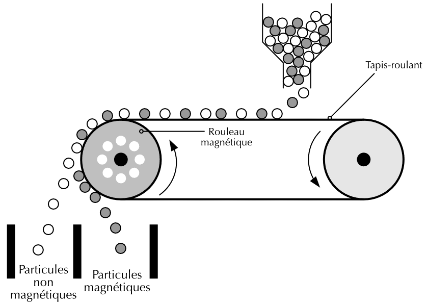
L’attraction magnétique, ou aimantation, utilise les différences de propriétés magnétiques. Elle permet de séparer un mélange de substances magnétiques et non-magnétiques.
Un mélange de limaille de fer et de poudre de soufre peut être séparé en utilisant un aimant. Cette technique est utilisée dans les déchetteries pour séparer les matériaux magnétiques des matériaux non-magnétiques.
3.4.2 La filtration
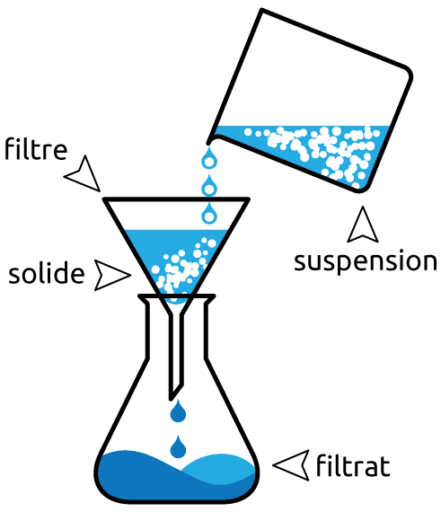
La filtration est basée sur la différence de taille des particules. Elle est souvent utilisée pour séparer un solide d’un liquide. Le liquide s’écoule à travers les petits trous dans le filtre alors que le solide est retenu.
Dans la filtration sous vide, on diminue la pression au-dessous du filtre ce qui accélère l’écoulement du liquide.
3.4.3 La vaporisation
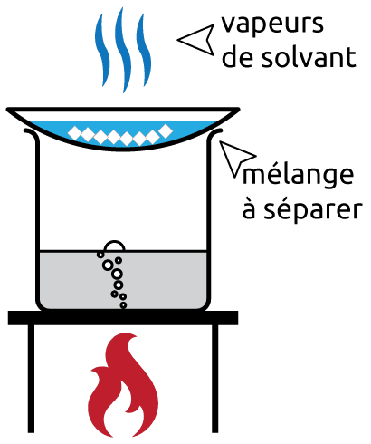
La vaporisation est basée sur les différences de points d’ébullition. Cette technique est utilisée pour séparer des solides dissous dans un solvant.
Lorsque le mélange contenant les matières solides dissoutes est chauffé, le solvant (liquide) vaporise progressivement et le soluté (solide) solidifie dans le récipient.
Le terme évaporation est utilisé lorsque l’eau est le liquide qui vaporise.
3.4.4 La dissolution sélective
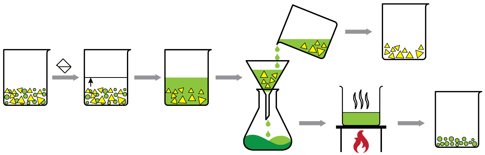
La dissolution sélective est basée sur les différences de solubilité.
Cette technique permet de séparer deux solides en ajoutant un solvant dans lequel un seul solide se dissout. Ensuite, il faut filtrer le mélange et vaporiser le solvant afin de récupérer les deux solides.
3.4.5 La sublimation
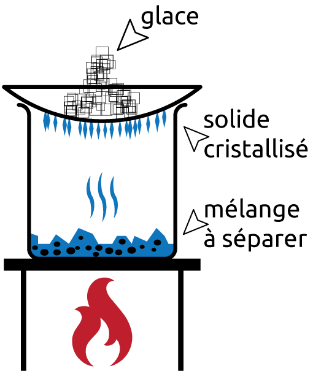
La sublimation est une technique de séparation dans laquelle une substance dans un mélange est directement transformée à l’état gazeux sans passer par l’état liquide. Par chauffage, la matière solide sublime et se solidifie à nouveau lorsque les vapeurs entrent en contact avec une surface froide.
Certains composés solides, tels que l’iode, le camphre, le naphtalène, l’acétanilide, l’acide benzoïque, peuvent être purifiés par sublimation à pression normale. D’autres composés, comme par exemple la caféine, devront être sublimés par chauffage sous pression réduite.
3.4.6 La distillation
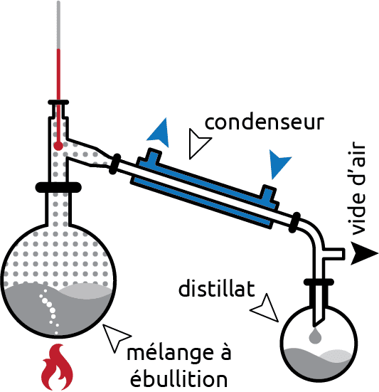
La distillation est la principale méthode de séparation des mélanges constitués de liquides. Elle est basée sur la différence des températures d’ébullition des constituants du mélange.
La solution est chauffée de sorte que le liquide ayant le point d’ébullition le plus bas se transforme en vapeur. La vapeur s’élève alors, et se dirige vers le condenseur, où elle est refroidie. La vapeur condense alors en un liquide appelé distillat.
3.4.7 La chromatographie
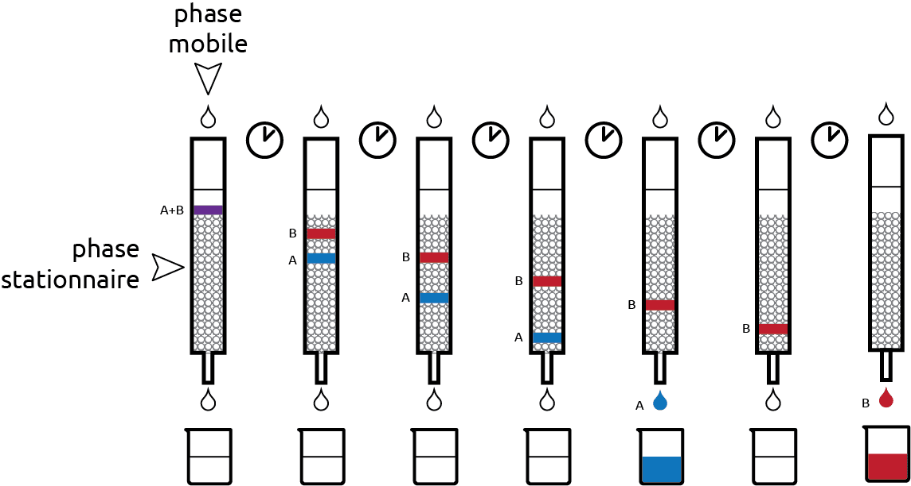
La chromatographie est basée sur le fait que les composants d’un mélange ont plus ou moins tendance à être retenus sur une surface solide.
Cette méthode se compose d’une partie statique (phase stationnaire) et d’une partie mobile (phase mobile). La phase mobile se déplace à travers la phase stationnaire. On injecte le mélange à séparer dans la phase mobile afin qu’il se déplace avec cette dernière dans la phase stationnaire. Les constituants du mélange ayant des affinités différentes avec les deux phases vont se déplacer plus ou moins vite et ainsi être séparés.
3.4.8 L’extraction
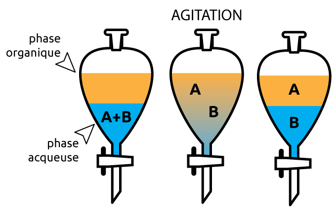
L’extraction est basée sur les différences de solubilités.
On utilise généralement deux solvants ayant une polarité différente, comme l’eau et un solvant organique. Les différentes substances vont migrer dans le solvant dans lequel elles ont la plus grande solubilité.
3.4.9 La sédimentation et la décantation
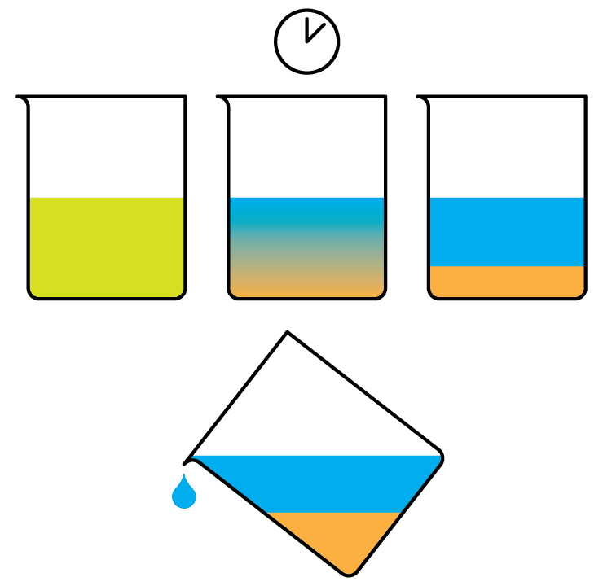
La sédimentation est un processus dans lequel on laisse couler des particules lourdes insolubles dans un liquide par gravitation. Le liquide clair obtenu est ensuite transféré dans un autre récipient, sans déranger les particules sédimentées. Ce transfert s’appelle la décantation.
La sédimentation et la décantation peuvent également être utilisées pour séparer un mélange de liquides lorsqu’ils ne sont pas miscibles.
La centrifugation utilise la force centrifuge pour accélérer la sédimentation. Les composants plus denses migrent loin de l’axe de la centrifugeuse, tandis que les composants moins denses du mélange migrent vers l’axe.
3.4.10 Résumé des méthodes de séparation
| mélange à séparer | méthode de séparation | Propriété utilisée |
|---|---|---|
| solide/solide | attraction magnétique | un composant est magnétique |
| solide/solide | dissolution sélective | un composant est soluble |
| solide/solide | sublimation | un composant sublime |
| solide/solide | chromatographie | affinité avec la phase stationnaire |
| solide/solide | extraction | solubilité dans un des solvants |
| solide/liquide | filtration | taille des particules |
| solide/liquide | vaporisation | température d’ébullition / volatilité |
| solide/liquide | sédimentation/décantation | masse volumique / taille des particules |
| liquide/liquide | distillation | température d’ébullition |
| liquide/liquide | chromatographie | affinité avec la phase stationnaire |
| liquide/liquide | extraction | solubilité dans un des solvants |
Quelle méthode de séparation est employée dans chacune des procédures suivantes ?
- Verser un mélange de pâtes cuites et d’eau bouillante dans une passoire.
- L’élimination des impuretés colorées dans le sucre brun pour en faire du sucre raffiné.
- La récupération du sel de table dans des bassins de faible profondeur après évaporation de l’eau de mer, sous l’action combinée du soleil et du vent.
- Filtration
- Cristallisation
- Vaporisation / Évaporation
3.5 Résumé
- Chaque échantillon de matière est soit un corps pur, soit un mélange.
- Un corps pur simple n’est constitué que d’atomes d’un seul élément, même lorsque ces atomes forment des molécules.
- Un corps pur composé résulte de l’union chimique de plusieurs éléments dans des proportions fixes.
- Un mélange réunit plusieurs corps purs sans transformation chimique.
- Un mélange est hétérogène si l’on distingue ses constituants à l’oeil nu, homogène dans le cas contraire.
- Les dispersions sont des mélanges où une phase dispersée est répartie dans une phase dispersante.
- La séparation d’un mélange exploite une différence de propriété physique entre ses constituants.
- Le choix de la méthode de séparationdépend des états des constituants et de la propriété qui les distingue.
3.6 Exercices supplémentaires
Identifiez les types et les états de la matière à partir des diagrammes de particules suivants :
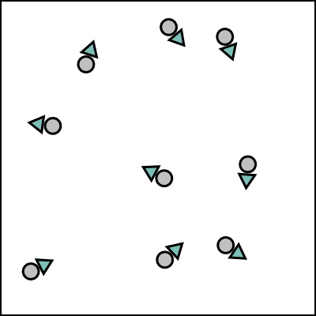
\(\Box\) solide
\(\Box\) liquide
\(\Box\) gaz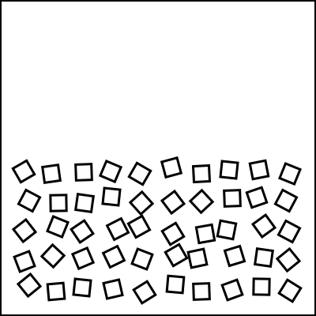
\(\Box\) solide
\(\Box\) liquide
\(\Box\) gaz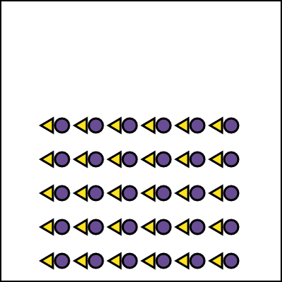
\(\Box\) solide
\(\Box\) liquide
\(\Box\) gaz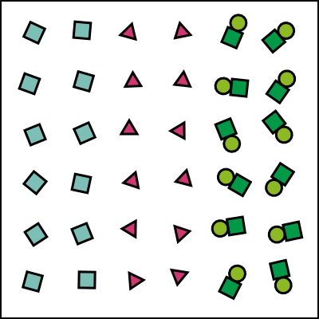
\(\Box\) corps simple
\(\Box\) corps composé
\(\Box\) mél. homogène
\(\Box\) mél. hétérogène
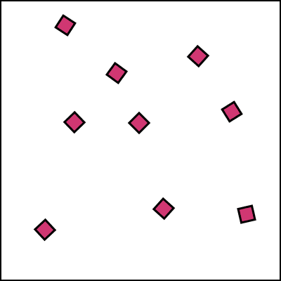
\(\Box\) solide
\(\Box\) liquide
\(\Box\) gaz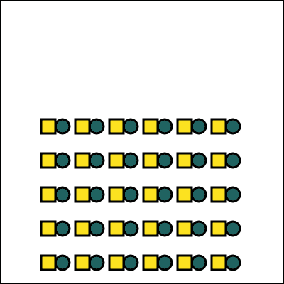
\(\Box\) solide
\(\Box\) liquide
\(\Box\) gaz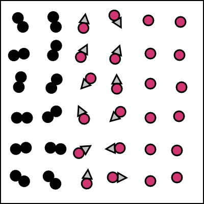
\(\Box\) corps simple
\(\Box\) corps composé
\(\Box\) mél. homogène
\(\Box\) mél. hétérogène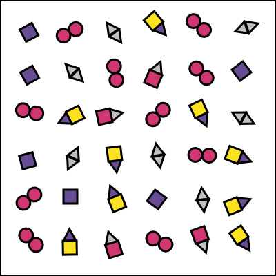
\(\Box\) corps simple
\(\Box\) corps composé
\(\Box\) mél. homogène
\(\Box\) mél. hétérogène
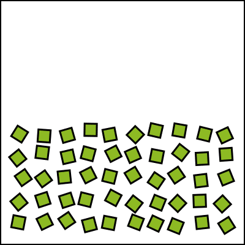
\(\Box\) solide
\(\Box\) liquide
\(\Box\) gaz
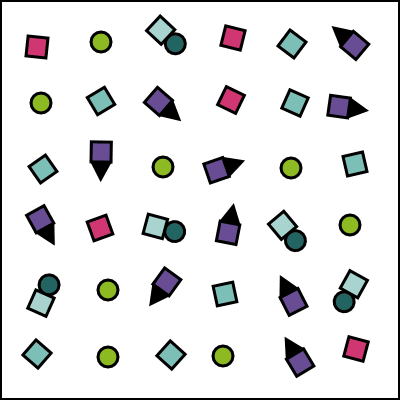
\(\Box\) corps simple
\(\Box\) corps composé
\(\Box\) mél. homogène
\(\Box\) mél. hétérogène
- gaz
- liquide
- solide
- mélange hétérogène
- gaz
- solide
- mélange hétérogène
- mélange homogène
- liquide
- mélange homogène
Indiquez si chaque échantillon de matière indiqué est un corps pur, un corps composé, un mélange homogène ou un mélange hétérogène.
- une cuillère en argent
- un pain au chocolat
- un glaçon
- une poutre en bois
- de l’encre rouge
- du jus d’orange pressé
- corps pur simple
- mélange hétérogène
- corps purs composé
- mélange hétérogène
- mélange homogène
- mélange hétérogène
Proposer une méthode de séparation par laquelle les mélanges suivants peuvent être séparés.
- de la limaille de fer et des copeaux de bois
- des éclats de verre et du saccharose (sucre de canne)
- de l’eau et de l’huile d’olive
- des paillettes d’or et de l’eau
- attraction magnétique
- dissolution sélective ou recristallisation
- sédimentation - décantation
- filtration
Le fer et le soufre sont deux corps purs simples. On mélange soigneusement de limaille de fer avec de la poudre de soufre.
- Avant tout chauffage, proposez deux méthodes physiques différentes permettant de récupérer le fer et indiquez, pour chacune, la propriété exploitée.
- On chauffe fortement le mélange : il se produit une réaction chimique qui forme du sulfure de fer selon Fe + S \(\rightarrow\) FeS. Le solide obtenu est-il encore un mélange ? Justifiez et précisez sa nature.
- Un aimant approché du sulfure de fer n’attire plus rien. Expliquez pourquoi, en comparant un mélange et un corps pur composé.
- Deux méthodes possibles :
- Attraction magnétique : le fer est magnétique, le soufre ne l’est pas. Un aimant retire la limaille de fer.
- Dissolution sélective : le soufre se dissout dans le sulfure de carbone (CS\(_2\)), pas le fer. On filtre pour récupérer le fer, puis on vaporise le solvant pour récupérer le soufre. La propriété exploitée est la différence de solubilité.
- Non, ce n’est plus un mélange. Il y a eu une transformation chimique : les atomes de fer et de soufre se sont liés dans un rapport fixe de 1 pour 1. Le solide obtenu est un corps pur composé (le sulfure de fer FeS).
- Dans le mélange, le fer et le soufre ne sont pas liés chimiquement : chaque constituant garde ses propres propriétés, dont le magnétisme du fer. Dans le corps pur composé FeS, les atomes de fer sont liés chimiquement au soufre ; le composé possède des propriétés nouvelles, différentes de celles du fer et du soufre, et n’est plus magnétique.
On dispose d’un mélange solide contenant du sel de cuisine (NaCl), du sable (SiO2), de la limaille de fer et des cristaux de diiode (I2). Les informations utiles sont les suivantes :
- le diiode se sublime facilement par chauffage doux ;
- le sel est soluble dans l’eau, le sable ne l’est pas ;
- seul le fer est magnétique.
- Proposez un protocole ordonné permettant de récupérer séparément les quatre constituants. Pour chaque étape, nommez la méthode et la propriété physique exploitée.
- Aucune de ces étapes ne modifie la nature des substances. De quel type de transformation s’agit-il ?
- Classez chacun des quatre constituants en corps pur simple ou corps pur composé.
- On procède dans l’ordre suivant :
- Attraction magnétique : on approche un aimant, qui retire la limaille de fer (propriété magnétique).
- Sublimation : on chauffe doucement le solide restant. Le diiode passe directement à l’état gazeux, puis se resolidifie sur une surface froide où on le récupère (aptitude à se sublimer).
- Dissolution puis filtration : on ajoute de l’eau. Le sel se dissout, le sable est retenu sur le filtre (différence de solubilité et de taille des particules). On récupère ainsi le sable.
- Vaporisation (évaporation) : on chauffe l’eau salée filtrée. L’eau s’évapore et le sel solidifie dans le récipient (différence de température d’ébullition).
- Il s’agit uniquement de transformations physiques : la nature chimique des constituants n’est pas modifiée.
- fer Fe : corps pur simple ;
- diiode I2 : corps pur simple ;
- sel NaCl : corps pur composé ;
- sable SiO2 : corps pur composé.
Pour chacun des systèmes suivants, indiquez s’il s’agit d’un corps pur, d’un mélange homogène ou d’un mélange hétérogène. Lorsqu’il s’agit d’une dispersion, précisez la phase dispersée et la phase dispersante ainsi que leur état physique.
- le brouillard
- l’eau gazeuse (boisson pétillante fermée)
- la mayonnaise
- le bronze (alliage de cuivre et d’étain)
- l’eau distillée
- Brouillard : mélange homogène (dispersion). Phase dispersée : liquide (fines gouttelettes d’eau) ; phase dispersante : gaz (air).
- Eau gazeuse : mélange homogène (dispersion). Phase dispersée : gaz (dioxyde de carbone CO2) ; phase dispersante : liquide (eau).
- Mayonnaise : mélange homogène (dispersion, émulsion). Phase dispersée : liquide (huile) ; phase dispersante : liquide (eau du jaune d’oeuf).
- Bronze : mélange homogène (dispersion solide, alliage). Phase dispersée : solide (étain) ; phase dispersante : solide (cuivre).
- Eau distillée : ce n’est pas un mélange, c’est un corps pur (composé, H2O). Il n’y a donc ni phase dispersée ni phase dispersante.
Au laboratoire, on chauffe séparément deux liquides incolores A et B et on relève leur température pendant toute la durée de l’ébullition :
- liquide A : la température reste constante à 78 °C ;
- liquide B : la température s’élève progressivement de 78 °C à 99 °C.
- Lequel de ces deux liquides est un corps pur ? Lequel est un mélange ? Justifiez à l’aide de la notion de point d’ébullition.
- Le liquide B est en réalité un mélange d’eau et d’éthanol. Quelle méthode de séparation permettrait d’en séparer les constituants ? Sur quelle propriété physique repose-t-elle ?
- Le premier liquide recueilli au cours de cette séparation est-il plutôt riche en eau ou en éthanol ? Justifiez à partir des températures d’ébullition (eau : 100 °C ; éthanol : 78 °C).
- Un corps pur possède un point d’ébullition fixe : sa température reste constante pendant toute l’ébullition. C’est le cas du liquide A (78 °C constant). Le liquide B est un mélange : comme sa composition change au fur et à mesure que le constituant le plus volatil s’évapore, sa température d’ébullition n’est pas fixe et augmente progressivement.
- La distillation. Elle repose sur la différence des températures d’ébullition des deux liquides.
- C’est l’éthanol qui est recueilli en premier. Ayant la température d’ébullition la plus basse (78 °C contre 100 °C pour l’eau), il se vaporise le premier : le premier distillat est donc riche en éthanol.